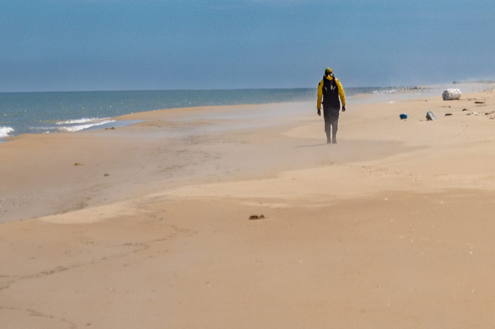

Отметки и дневник хранятся в этом браузере на этом устройстве. Чтобы не потерять записи, время от времени копируй дневник из блока выше.

25 недель к цели: 10 км за 50 минут. Бег каждый день, кроме воскресенья, зарядка, беговые упражнения, плиометрика, пилатес, самомассаж и растяжка, сила для плеч, спины, пресса и ног.